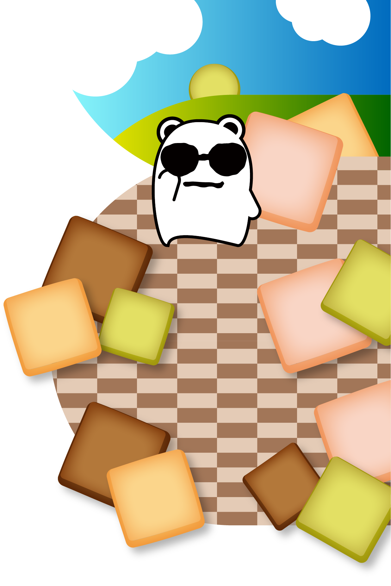

Pretty Magic

Pretty Magic.
VOCALOID NFT Art Project.
Scroll
Pretty Magic.とは
VOCALOID, Music Art Projectです。
YouTubeやNFTなど使い、二次創作の収益化を行います。
Star Dream
動画準備中
OpenSea.io
Music Video 準備中...
各種音源
準備中
その他リンク
ニコニコ動画 準備中...